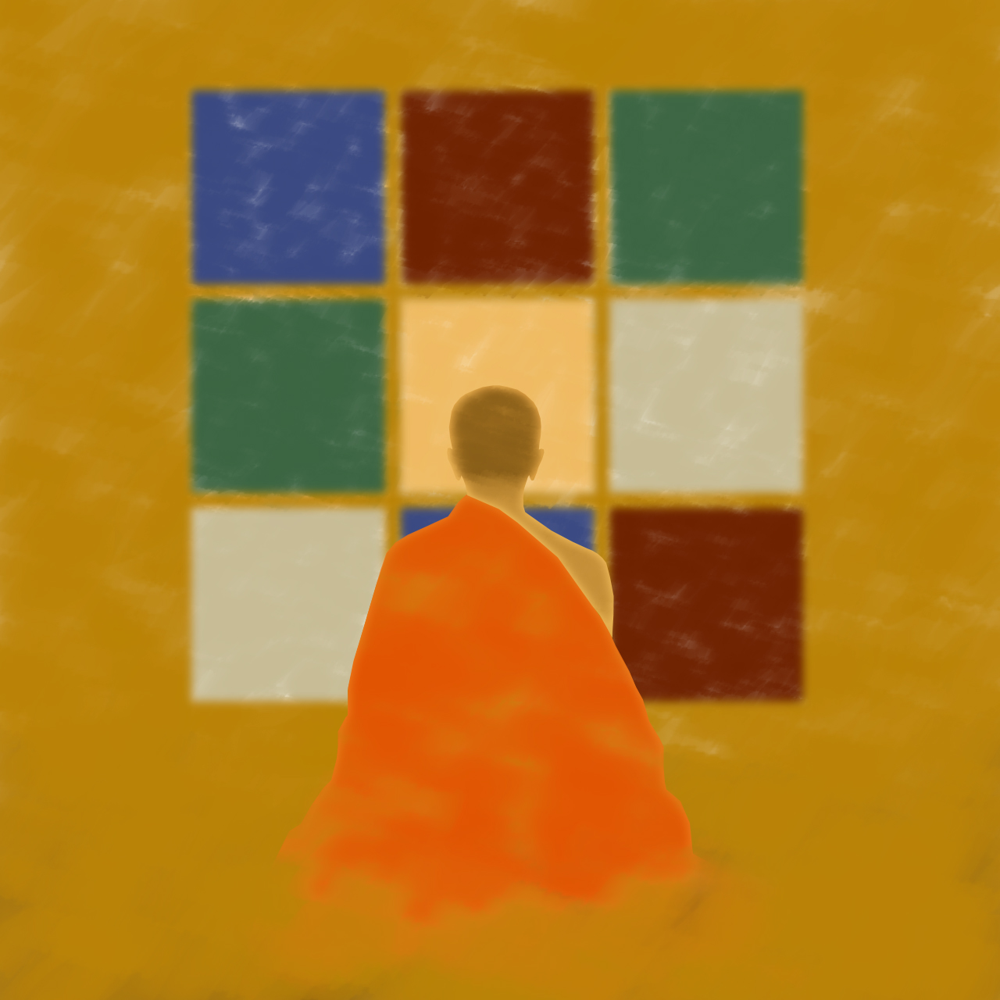

After the 8th Heidelberg Laureate Forum 2021, I participated in the related Intercultural Science-Art Project, which aims to create awareness in society about the academic work of early-career researchers. The digital artwork below, created by a friend of mine, is connected to combinatorial reconfiguration, a common theme across many problems in my research.
Dịch Biến - Diện Bích
Artwork by Đỗ Công Lý
One of my favourite research themes is to decide if two configurations of an object can be transformed to one another, with some prescribed transformation rules. As an example, think about the Rubik's cube: Given a scrambled cube, can we and if so, in how many steps can we transform it to the target configuration where each face has the same colour?
The title features a common word play in Vietnamese (i.e., spoonerism), where we swap the components of two words to form two new words. The first two words, "dịch biến", mean "movement and transformation", which captures this strand of research (and arguably the area of graph algorithms in general). The second two words, "diện bích", mean "wall gazing". It is commonly used in the phrase "cửu niên diện bích" (nine years of wall gazing), which refers to the tale of Bodhidharma facing the wall of a cave and meditating for nine years. I find it an interesting word play, as one part refers to change, while the other to distancing oneself from the changes in the outside world.